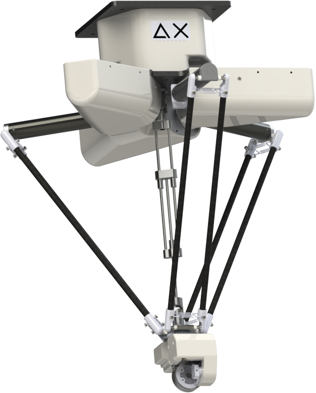

GET STARTED
Robot setup guides
From assembly to wiring. Follow the guides for your Delta X robot and accessories.

Guides and technical resources to set up, program, and run your robot.
From assembly to wiring. Follow the guides for your Delta X robot and accessories.

Find G-code syntax, parameters, and examples for your model.
Select your model and jump straight to the details.
| Robot model | Get started | Programming | Specifications |
|---|---|---|---|
| Delta X S V5 | Assembly guide | G-code | D400D600D800 |
| Delta X S V4 | — | G-code | D400D600D800 |
| Delta X 3 | — | G-code | — |
| Delta X 2 Plus | — | G-code | View specs |
| Delta X 2 | Assembly guide | G-code | View specs |
| Delta X 1 | — | G-code | View specs |
Build the rest of your automation system.
Explore tutorials or get in touch with the Delta X team.